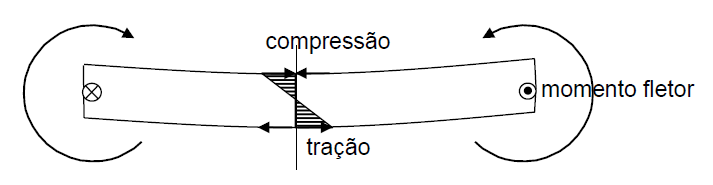
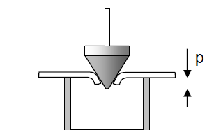

Materiais da embalagem logística
O projeto da embalagem, desde sua fase conceitual à fase de dimensionamento, exige um conhecimento das possibilidades e características dos materiais propostos nas diferentes alternativas de projeto. Se quem desenvolve o projeto é o fabricante do produto embalado, ele terá bom conhecimento sobre os requisitos de desempenho e pouco conhecimento sobre os materiais. Se, ao contrário, quem projeta a embalagem é seu fabricante, ele terá bom conhecimento sobre os materiais que usa e pouco sobre o desempenho esperado. É preciso juntar esses conhecimentos.
Conhecer os materiais é fundamental para o controle de desenvolvimento, de projeto. As características de desempenho devem estar ligadas a características dos materiais. É fundamental, também, para o controle de recebimento. Como vimos em Especificação de desempenho ou de material, é geralmente mais fácil controlar propriedades do material que controlar o comportamento da embalagem em testes de desempenho. Vamos analisar aqui, portanto, quais são as propriedades do material que devem ser controladas por ter relação com o desempenho esperado.
A madeira
Embalagens e paletes de madeira têm peças sujeitas a esforços de flexão e de compressão, além de esforços de ligação entre as peças. A flexão e a compressão com possibilidade de flambagem (compressão de peças esbeltas) estão associadas à rigidez das peças. A rigidez depende de características dimensionais, como o momento de inércia na flexão, e de características do material: sua elasticidade e a tensão limite de ruptura. Essas propriedades do material estão ligadas, estatisticamente, a uma propriedade de fácil controle: a dureza. Da mesma forma que no aço, onde se faz o controle da dureza (Rockwell, Vickers, Brinell) e onde há uma relação empírica entre a dureza e a tensão limite de ruptura (229 Brinell = 772N/mm2 , por exemplo) também na madeira existe alguma correlação.
As duas formas de medir a dureza da madeira são a “dureza Janka” (Janka hardness) e a “dureza dinâmica”.
A dureza Janka é definida na NBR 7190:97 como a força necessária para inserir na madeira, perpendicularmente às fibras, uma esfera rígida com diâmetro de 11,28mm em uma profundidade de 0,56mm. Usa uma prensa hidráulica associada a um anel de reação e um dinamômetro, o que é um equipamento relativamente caro e pouco portátil, e tem um resultado com correlação muito baixa com a tensão de ruptura.
A dureza dinâmica é definida por método da norma IPT-NEA 34 ME (baseada na ASTM D 2394 — Falling ball indentation). Usa-se uma esfera de aço com diâmetro de 50,0mm, que cai com energia de 5,0J sobre a madeira ensaiada, medindo-se o diâmetro médio da mossa feita no material. Para facilitar essa medida pode ser colocado sobre a madeira um pedaço de papelcarbono.
Em São Paulo, onde g = 9,78643m/s2, a altura de queda da esfera é de 1,00m (mais exatamente, 0,993m). O equipamento é muito mais simples que o anterior, e a correlação é melhor, dada pela fórmula:
onde σ é a tensão de ruptura na flexão estática, conforme NBR 7190:97, em daN/cm2, e D é o diâmetro médio da mossa, em mm.
Para simplificar, embora de forma grosseira, pode-se aproveitar uma correlação aproximada que existe entre a dureza e a densidade da madeira: madeiras mais densas são mais duras. Na prática isso leva a uma classificação de três grupos de madeiras: as leves e moles (Grupo 1), as médias (Grupo 2) e as duras e pesadas (Grupo 3). Entre as primeiras estão, por exemplo, o pinho e os pinus, a caixeta, o cedro. As médias são, por exemplo, a canela branca e o eucalipto grandis. Do Grupo 3 são, por exemplo, as demais “canelas”, a peroba rosa, o eucalipto saligna. Uma publicação do IPT — Fichas de características das madeiras brasileiras — publicação IPT 966, 1971, traz uma extensa documentação sobre as principais propriedades de uma grande lista de madeiras. A publicação IPT 3003 — Embalagem para distribuição física e exportação — 2006, traz uma tabela mais voltada para madeiras aplicáveis em embalagem. Essas tabelas são de difícil aplicação pois exigiriam uma capacidade de identificação das madeiras das diferentes espécies, o que poucos especialistas conseguem. Por isso é melhor o controle pela dureza, independentemente do nome da madeira.
Um outro método de medida da dureza por impacto é dado pela ISO 3351:1975. Wood, Determination of resistance to impact indentation. Outras propriedades devem ser controladas. O teor de umidade é de importância fundamental, pois afeta as propriedades de resistência e sabemos que madeiras úmidas podem ser fontes de graves problemas, levando água para dentro da embalagem ou do contêiner. O teor de umidade é definido como:
onde mu é a massa do corpo-de-prova úmido e ms a massa após secagem completa. Uma madeira verde pode ter teor de umidade de 120%, por exemplo, o que significa que tem mais água que madeira. As propriedades mecânicas são medidas e dadas a 15% de teor de umidade. Essa é a umidade aconselhável das peças de madeira para embalagem, ou, no máximo, 18%. Outras propriedades podem ser importantes, como o fendilhamento (facilidade de rachar), a retratibilidade (intensidade de encolhimento na secagem), o cheiro (algumas madeiras são fétidas).
Tratamento da madeira
Além da secagem, peças de madeira serrada com espessura superior a 6mm devem ser tratadas para desinfestação de insetos por meio de um aquecimento a 56°C por 30 minutos, conforme a Publicação n°15 da ONU/FAO, que pode ser obtida em http://www.ippc.int/IPP/En/default.htm. A desinfestação pode ser feita e certificada, no Brasil, por empresas reconhecidas pelo Cenagri (cenagri@agricultura.gov.br). As peças tratadas devem receber uma marca normalizada da IPPC, aplicada pela empresa certificada. Peças de madeira aglomerada ou compensada não precisam de tratamento.
Mais detalhes sobre o tratamento de madeiras podem ser obtidos nas publicações especializadas do IPT, como o Manual de preservação de madeiras.
Conectores
As estruturas de madeira dependem não apenas das características do material, mas também dos elementos de ligação entre as peças. Pregos e grampos devem ter sua resistência ao arrancamento e ao dobramento controladas. Pregos mais resistentes ao arrancamento são os anelados, espiralados ou resinados. Pode ser aumentada a resistência ao arrancamento, também, pelo dobramento da ponta do prego. Parafusos são mais resistentes que pregos e têm a vantagem de permitir mais fácil abertura e refechamento da embalagem. São usados para a fixação de peças ou do produto à base da embalagem.
Materiais para sacaria
O papel é usado, em embalagens logísticas, principalmente em sacaria. Há uma tendência geral de sua substituição por materiais têxteis naturais ou sintéticos, ou filmes plásticos, ou têxtil-não-tecido. Há casos, porém, que exigem o papel por suas características de resistência a temperaturas relativamente elevadas e por não reter a umidade dentro da embalagem, como nos sacos de cimento ou de pão. Uma característica interessante do papel, em comparação com outros materiais de sacaria, é o coeficiente de atrito mais elevado, que dá maior estabilidade aos empilhamentos (embora filmes plásticos com certos aditivos cheguem a coeficientes de atrito até maiores). Já está dito, portanto, que o coeficiente de atrito é uma das características a ser especificadas e controladas em materiais para sacaria. Em lugar do atrito, a estabilização também pode ser obtida com adesivos anti-deslizantes. As propriedades de resistência do material são as mais importantes: à tração, à perfuração estática e ao rasgo.
A resistência ao rasgo pode ser controlada por um ensaio denominado elmendorf tear test, aplicável a papel, filmes plásticos e têxteis.
A resistência à perfuração estática é importante em filmes de envolvimento de cargas, estiráveis ou termo-retráteis, e em sacos que podem conter objetos um pouco pontiagudos, como sacolas de supermercado (que não deixa de ser uma embalagem logística). Pelo teste definido na norma IPT-NEA 36 MT, verifica-se se o material suporta, por certo tempo, um determinado peso, dado na especificação, aplicado por uma ponta esférica, com diâmetro de 10mm, ao centro de um corpo-de-prova fixado entre duas flanges.

A resistência à tração pode ser controlada de forma dinâmica ou estática, numa tração simples ou num estado duplo de tensões. Tem-se um estado duplo de tensões quando um saco contendo grãos ou pó sofre uma queda: o conteúdo tende a se espalhar em todas as direções, com o impacto, sendo contido pela resistência da parede em duas direções do plano.

O teste que reproduz essa condição é o de impacto de esfera, ou dart drop test, como o normalizado pela IPT-NEA 57 MT.

O estado duplo de tensões em condição estática (pouco significativa) é reproduzido em um ensaio chamado de “arrebentamento”, também conhecido por mullen test. O corpo-de-prova retirado do saco, de papel, plástico ou têxtil, é comprimido entre duas flanges, uma das quais ligada a um reservatório de glicerina que recebe pressão hidráulica. A pressão é transmitida ao corpo-de-prova por meio de um diafragma de borracha e mede-se, com um manômetro, a que causa a ruptura.

A unidade de medida do ensaio de arrebentamento é o kPa, ou MPa.
No caso de materiais muito extensíveis, como papéis crepados, filmes finos, tecido-não tecido, este ensaio não se aplica, pois a deformação do diafragma seria excessiva.
O ensaio de tração simples estático é o que fornece mais informação, pois dá a resistência do material em duas direções principais. Deve medir a energia de ruptura de um corpo-de-prova em máquina de tração que registra a força e a deformação, e portanto a área definida pelas duas variáveis, que representa a energia.
Dado que exige um equipamento caro (os ensaios exigem equipamentos mais caros que os testes, pois devem dar uma medida e não apenas uma verificação tipo passa-não passa), esse ensaio é pouco utilizado, sendo preferíveis, na prática, os testes anteriores. No caso de sacaria têxtil, pode-se controlar a resistência do fio na trama (fios transversais, passados pela lançadeira) e no urdume (fios longitudinais, paralelos à ourela), além do número de fios por 10cm do tecido, nas duas direções. Uma forma de controlar a resistência do fio é dada pela norma IPT-NEA 30 MT. O fio (dobrado se for torcido) é submetido à tração por um impacto com certa energia, verificando-se se se rompe ou não.
Cartão e papelão
Pode-se exigir, do papel, que tenha alguma resistência ao dobramento, ou à flexão, ou mesmo à flambagem. Essa resistência é denominada rigidez. Ela é obtida por um aumento da espessura do papel, mas quando este tem certa espessura é considerado um cartão.
A rigidez depende da espessura e do módulo de elasticidade do material (e de como esse se distribui ao longo da espessura). Em uma flexão, as tensões de tração e compressão se distribuem ao longo da espessura, sendo máximas nas faces e nulas na região central, da linha neutra.

Por isso, o material deve ser mais resistente nas vizinhanças das faces. Na região central, as tensões menores permitem o uso de material de menor resistência. Num cartão, é usado um enchimento de material reciclado, mais barato. O controle da rigidez do cartão usa método conhecido como Taber siffness test.
Existe uma relação aproximada entre a rigidez e a espessura da peça sob flexão. Para um material homogêneo, a rigidez D é dada por D = EJ, onde E é o módulo de elasticidade e J o momento de inércia da seção transversal da peça. Sabemos que J é função do cubo da espessura do material. Portanto, um pequeno aumento da espessura resulta em grande aumento da rigidez. Na impossibilidade de se controlar a rigidez, pois o equipamento Taber é complexo e caro, pode-se controlar a espessura, que terá alguma relação aproximada com a rigidez. O IPT desenvolveu método que usa um equipamento muito simples e barato para medir a rigidez do cartão e do papelão.
O processo de aumentar a rigidez por um aumento de espessura tem uma limitação no gasto de material de enchimento e na dificuldade de dobrar o material espesso e maciço. No fim do século 19 desenvolveu-se, em uma série de experiências (até de chapeleiro para enrijecer cartolas), a técnica de ondular uma folha de papel e colar a esta uma folha lisa, criando-se o papelão ondulado de face simples. Quando a técnica chegou a uma folha colada a cada face do miolo ondulado, estava criado o papelão ondulado que hoje se usa em embalagem. (O de face simples ainda se usa como acolchoamento). Tem-se, assim, uma boa rigidez com o mínimo de material e a possibilidade de dobramento em vincos (linhas de redução da espessura).
Foram padronizados os tipos de onda: A, com espessura de 4,7mm; B 3mm; C: 4mm; E: 1,2mm. E as ondas podem ser duplas: BC, AC, desde que se coloque uma folha de miolo plano intermediário, para colagem de uma onda à outra (alguns chamam esse miolo plano de “capa interna”, mas é errado, pelo conceito de capa e por serem as capas mais resistentes justamente por estarem nas faces da estrutura).
Sabe-se, desde estudos feitos nos primeiros anos 60 do século passado, no IPC ( Institute of Paper Chemistry), nos EUA, que a resistência à compressão de uma caixa de papelão depende da rigidez do material e de sua resistência à compressão colunar. Assim, essas são as duas propriedades importantes a serem controladas no papelão para que se tenham caixas com certa qualidade. Além da resistência à compressão, a resistência da caixa à flexão do fundo ou das paredes também depende da rigidez.
O método para a medida da rigidez desenvolvido pelo IPT baseia-se em um ensaio de flexão de corpo-de-prova engastado em uma extremidade e carregado na outra, medindo-se a flecha na ponta carregada. Segue a norma IPT-NEA 27 ME.

Esse método exige um corpo-de-prova muito longo para que haja uma flecha sensível mesmo com uma pequena carga, para minimizar o efeito da deformação por cisalhamento somado ao da flexão.
Método e equipamento que eliminam o efeito do cisalhamento foram desenvolvidos pelo IPT e por este autor, e pelo laboratório sueco Lorentzen & Wettre, mas ainda são pouco conhecidos no Brasil.
Uma questão curiosa: a rigidez é maior em qual das duas direções do papelão? A ou B?

Embora na condição A o miolo ondulado contribua para a rigidez, e não contribua na condição B, esta é a de maior rigidez quando se trata de capas de papel não reciclado, onde há uma diferença significativa no comprimento das fibras, mais longas na direção de fabricação e mais curtas na direção transversal (da geratriz das ondas). Assim, a ortotropia do papel, com maior resistência à tração e compressão das capas na condição B, dá a esta maior rigidez.
A unidade de medida da rigidez por unidade de largura do corpo-de-prova é daN.cm. No aparelho do IPT, o que se mede é a flecha em mm, inversamente proporcional à rigidez (portanto uma medida da compliância).
Embora seja a propriedade mais importante do papelão, a rigidez é pouco controlada, em parte por desconhecimento, em parte por ser mais fácil controlar a espessura. Sabemos que a rigidez depende da espessura e da qualidade do material (módulo de elasticidade e resistência à flambagem do papel, além da distribuição do material ao longo da espessura). Se controlarmos apenas a espessura, esse será um controle grosseiro, que terá pouca relação com a resistência que se espera da embalagem. Mas tem a vantagem de ser uma medida fácil. Assim, o próprio IPC desenvolveu uma fórmula simplificada (a fórmula completa, que envolve a rigidez, pode ser encontrada em literatura especializada, como a do IPT) que relaciona a resistência à compressão da caixa de papelão à espessura e à resistência de coluna. Essa fórmula, conhecida na indústria como “fórmula de MacKee”, foi aperfeiçoada pelo IPT com uma determinação mais precisa dos fatores empíricos, para onda C e BC.
Onde E é a resistência da caixa em um ensaio de compressão; C a resistência de coluna; e a espessura; Z o perímetro da caixa. As unidades devem ser coerentes, isto é, se C é dado em daN/cm, E deve estar em daN , e e Z em cm. O fator empírico k determinado pelo IPT é de 5,6 para onda C e 4,9 para onda BC.
Uma fórmula simplificada para o cálculo da resistência de coluna necessária, que envolve um fator de segurança de aproximadamente 5, é a seguinte:
Onde C é a resistência de coluna (daN/cm), P o peso (em daN) de uma caixa, n o número de camadas de empilhamento, L o comprimento e W a largura da caixa em cm.
Há diversos métodos para a determinação da resistência de coluna do papelão. O corpo-de-prova da amostra é recortado e colocado em uma prensa dinamométrica com a geratriz das ondas na direção da força de compressão aplicada.

Quando as bordas do corpo-de-prova não são reforçadas, o amassamento se dará por flambagem localizada na borda. Tem-se, então, um “ensaio de esmagamento de borda” (edge crush test), normalizado pela ISO. Quando se faz um reforço das bordas, seja por imersão em parafina (antiga norma ASTM), seja por se ter bordas mais longas (TAPPI e proposta do IPT), tem-se um ensaio de coluna do papelão, que é o que interessa.

Uma outra forma de evitar o colapso das bordas é a aplicação da força de compressão, em parte, por atrito contra as capas. Este é o método adotado pela ABNT NBR 6737 (e pela TAPPI T839), pelo qual o corpo-de-prova retangular, de 100 x 60mm, é colocado com as bordas presas entre duas garras dotadas de lixa.

Algumas embalagens de papelão não precisam suportar compressão de empilhamento. Algumas devem suportar, eventualmente além desse, outros esforços. No caso de flexões de fundo e paredes, pela pressão interna do conteúdo, como já vimos, a propriedade evidente a controlar no material é a rigidez. No caso de esforços de perfuração, há duas possibilidades: esforços estáticos ou dinâmicos. Esforços estáticos ocorrem, por exemplo, quando um produto se apóia no fundo da caixa em pés ou áreas concentradas, tendendo, pelo peso, a perfurar o papelão. O material, para suportar esse tipo de esforço, deve ter sua resistência controlada pelo ensaio de arrebentamento, que já vimos com a sacaria. Estranhamente (ou por razões históricas conhecidas e obsoletas), esse é o ensaio mais usual com o papelão, sendo tão pouco significativo. Alguma significação existe, pois a pressão de arrebentamento tem relação muito imprecisa com a rigidez do material, especialmente quando é maior o diâmetro do diafragma de borracha.
O ensaio de perfuração dinâmica, mais significativo em termos de correspondência com esforços que ocorrem na prática, pode ser feito por dois métodos: o método do IPT e o da ASTM, TAPPI, ANSI, ISO.

O método do IPT mede a penetração de uma ponta cônica que cai, com certa energia, sobre o corpo-de-prova apoiado em uma parede tubular.
O método das outras normas usa um pêndulo com ponta piramidal (tri-ortogonal) que impacta o corpo-de-prova com certa energia, medindo-se, pelo percurso do pêndulo após a perfuração, quanta energia foi absorvida por esta. O método do IPT é muito mais simples, possível de calibrar, mais reprodutível. Apesar de todas as vantagens, ainda é desconhecido pela indústria.
Um ensaio usual, mas de importância duvidosa, é o de esmagamento de onda (flat crush test), pelo qual se mede a pressão que causaria o colapso das ondas num papelão de onda simples (não dupla). Como o ensaio de espessura é feito com determinada pressão sobre as faces do papelão (0,5daN/cm2), ele já garante que as ondas do papelão não irão colapsar, inclusive para onda dupla (que não admite o ensaio de esmagamento, embora pudesse admitir o teste de um valor limite especificado).
A tabela abaixo dá valores típicos de propriedades importantes de um material de qualidade relativamente boa.
| Propriedade | ONDA C | ONDA BC | Unidade |
|---|---|---|---|
| Espessura | 4,0 | 6,4 | mm |
| Coluna | 5 | 8 | daN/cm |
| Perfuração (ASTM) | 4 | 8 | J |
| Arrebentamento | 1000 | 1200 | kPa |
| Esmagamento | 100 | - | kPa |
| Flexão (IPT) | 5 a 8 | 7 a 10 | mm |
| Gramatura | 600 | 1000 | g/m 2 |
Outras características de resistência podem ser especificadas, como a resistência de vinco (norma IPT-NEA 76 ME). Algumas características devem ser conhecidas, mas não especificadas, como a gramatura e o coeficiente de atrito do papelão, importante para a estabilidade de pilhas, que é, geralmente, em torno de 0,5 (do material com ele próprio, dependendo um pouco da direção relativa das ondas).
Características relacionadas à resistência, mas que não são medidas de resistência, podem ser controladas. Destaca-se a capacidade do papelão (ou papel) absorver água, medida pelo ensaio de absortividade, ou cobb test. Determina-se a massa de água absorvida por certa área do material, em certo tempo, submersa em uma coluna de 1cm de água. Tem-se um resultado em g/m2.
Como os materiais celulósicos são higroscópicos, e o teor de umidade afeta a resistência, todos os ensaios ou testes devem ser feitos em um ambiente com atmosfera condicionada. Dependendo da norma, usa-se uma umidade relativa de 65% a 23°C, ou de 50% a 20°C, com certa tolerância. A primeira condição é preferível, por corresponder mais ao nosso clima tropical, mas a segunda é preferida pela ABNT por corresponder à ISO (feita por países mais secos).
Muitas empresas estão habituadas a especificar características completamente irrelevantes do papel, cartão ou papelão, entre as quais se destaca a gramatura. A massa de um metro quadrado do material não tem nenhuma relação com sua resistência. A gramatura não tem relação com a resistência do papelão, mas pode ser importante conhecê-la para a determinação da quantidade de água que há em uma caixa, em função do teor de umidade do material, que pode chegar, normalmente, a 15% se o ambiente tiver umidade relativa em torno de 80%. Esse é um fator importante no projeto dos sistemas de proteção contra corrosão, como no cálculo, já mostrado, da quantidade de sílica-gel, por exemplo. Outro erro comum é a especificação com uma tolerância. O certo é a especificação de valores mínimos admissíveis (ou máximos, em alguns casos, como o da absorção de água, ou da flecha, no ensaio de flexão). Se é especificada uma resistência, o comprador não irá reclamar se receber um material com resistência maior que a pedida. Deve-se especificar a tolerância apenas para as dimensões da embalagem.
Plásticos
Os materiais plásticos usados em embalagem são, geralmente, termo-plásticos.
Os materiais plásticos flexíveis, em filmes, já tiveram algumas das propriedades significativas, de resistência, tratadas quando abordamos a sacaria, com considerações que são válidas também para os filmes de envolvimento de cargas, estiráveis ou termo-retráteis.
Outra propriedade que pode ser importante, que se aplica a filmes ou materiais laminados combinados (inclusive com papel, alumínio e tecidos de reforço) é a permeabilidade a gases e, principalmente, ao vapor d'água. É feita a especificação e o controle da taxa de transmissão de vapor d'água (TTVA ou WVTR), em g/m2.24h. Valores típicos de TTVA são dados, para alguns filmes, na tabela abaixo.
| Material | Espessura (mm) | TTVA (g/m2.24h) |
|---|---|---|
| PEBD | 0,1 | 4 |
Papel PEBD Papel | 0,3 0,03 0,3 | 20 |
PEBD alumínio | 0,03 0,05 | 0,5 |
PVC | 0,1 | 50 |
No caso de plásticos rígidos, como os usados em caixas e bombonas, pode ser controlada a resistência à tração do material. Isto, no entanto, é pouco usado, pois a resistência da embalagem depende da resistência do material, mas também de como este se distribui e de como é o desenho da embalagem, com eventuais pontos de concentração de tensões e reforços. Por isso, o usual é o teste de desempenho: pressão interna, no caso de bombonas, quedas e impactos localizados, no caso de caixas.
Um problema comum, no caso de bombonas plásticas para produtos químicos, é o da compatibilidade com o produto a ser envasado. Convém, então, que seja verificada a compatibilidade através de testes nos quais a embalagem é submetida à pressão interna ou queda após um período de contacto com o produto, a 50°C para aceleração dos efeitos. Estes podem ser o fissuramento sob tensão (stress cracking), ou permeação, ou dissolução.
Pode haver, também, um problema de fragilização do plástico a baixa temperatura (cerca de -40°C), que exigiria um teste nestas condições para embalagens (e paletes plásticos) que devam ter armazenagem frigorificada.
Identificação de plásticos
Uma das dificuldades correntes, com embalagens plásticas, é o da identificação do material de que são feitas. Para isso existem alguns testes simples (além, é claro, da identificação por análises químicas mais complexas).
A solubilidade em acetona pode ser verificada. São solúveis o PA, o PS, o PVC e o PVDC. São insolúveis o PEBD, o PP e o poliéster.
A densidade pode ser verificada. Afundam n'água o PA, o poliéster, o PS, o PVC, o PET. Flutuam o PEBD, o PEAD e o PP. A forma e odor da queima podem ser verificados. O PA tem queima muito lenta, formando bolas na ponta, com odor de cabelo queimado. O PEBD queima rapidamente, com odor de vela, gotejando. O PP queima também com odor de vela, com chama azulada de extremidade amarela, solta fumaça branca e não goteja. O PS queima lentamente, com odor muito forte, fumaça negra e gotejamento. O PVC queima muito lentamente, com chama auto-extinguível amarela de extremidade verde, com odor irritante de borracha queimada. O PET queima com chama amarela/laranja, com fumaça negra, com odor de manteiga rançosa. Pode-se, para melhor identificação, comparar o material com algum de natureza conhecida. Eventualmente, uma identificação do material pode ser feita simplesmente olhando a marca de reciclagem: um número dentro de três setas dobradas, formando um triângulo.
Os números são os seguintes (font: www.plastval.pt):
- PET: Politereftalato de Etileno
- PEAD: Polietileno de Alta Densidade
- PVC: Policloreto de Vinilo
- PEBD: Polietileno de Baixa Densidade
- PP: Polipropileno
- PS: Poliestireno
- EPS: Poliestireno Expandido
- PA: Poliamida (nylon)
Vidro
O vidro é usado em embalagem logística quando isso é exigido pelas características químicas do líquido a ser contido. Dada sua fragilidade, garrafões ou bombonas de vidro são sempre uma embalagem primária dentro de uma embalagem secundária acolchoada, como uma caixa ou engradado. Sua característica de controle é a espessura, além da composição.
Materiais de alcochoamento
Os materiais e sistemas de acolchoamento têm a capacidade de transformar a energia de um impacto, ou de uma vibração, em energia de deformação, reduzindo, com isso, a intensidade das acelerações, portanto das forças decorrentes. Assim, a avaliação de sua qualidade deve ser feita na condição de choque e na de vibração.
O comportamento do material em choque é avaliado, conforme a norma IPT-NEA 32 ME, baseada na ASTM Test Method D 1596, para uma determinada altura de queda admissível da embalagem. Uma determinada massa cai, dessa altura, sobre certa área do material de acolchoamento (normalmente 200 x 200mm) e mede-se, com um acelerômetro fixado a essa massa, qual a intensidade de choque (valor de pico da aceleração, em G). Variando-se o peso da massa de impacto, tem-se uma curva, para cada espessura de material de acolchoamento, relacionando a aceleração com a pressão estática do peso sobre a área de acolchoamento.

As curvas características dos materiais de acolchoamento são encontradas nos catálogos dos fabricantes e em publicações especializadas, como as do IPT.
Essas curvas permitem, no projeto da embalagem, quando se conhece a aceleração crítica do produto (como definida no artigo sobre O produto no projeto de sua embalagem), que se tenha um limite nesse gráfico.

Conhecido o peso do produto e sua área de apoio no acolchoamento, tem-se a pressão estática p, e, portanto, um ponto que define a espessura mínima necessária de material. Pode-se, também, dada a espessura do material de acolchoamento, 10 cm no exemplo da figura, determinar a área de apoio necessária para que o choque, com queda de 60cm, não tenha aceleração superior à crítica.
Outra forma de avaliar o acolchoamento em choque é o teste de queda da embalagem com o produto. Pode-se verificar se o produto sofre algum dano ou, se isto for inviável, testar a embalagem com um produto fictício. O produto fictício deve ter a mesma forma, peso e centro de gravidade do produto real, cuja aceleração crítica se conhece. Com um acelerômetro fixado ao produto fictício, verifica-se se a aceleração crítica é atingida, nas diversas posições de queda, podendo-se, então, variar a espessura dos acolchoamentos para se chegar a um projeto otimizado.
A análise do comportamento do acolchoamento em vibração é mais complexa. Pode ser seguida a norma IPT-NEA 33 ME. Deve-se avaliar qual a freqüência de ressonância com dada espessura de acolchoamento e dada pressão estática do produto. Deve-se levantar, também, o grau de amortecimento (fator de amplificação) da vibração em cada ponto. Dada essa complexidade, é geralmente preferível o teste da embalagem com o produto, sob luz estroboscópica ou outra forma de observar o comportamento dos componentes, fazendo-se ajustes do acolchoamento para otimização do projeto.
Coeficientes de atrito
É uma propriedade importante para os materiais de embalagem (como já dissemos para o papelão). Não é propriedade de um material, mas de dois, cujas superfícies interagem. O autor determinou, pelo método do plano inclinante, os seguintes valores para o coeficiente de atrito estático:
- Madeira – madeira seca
- 0,3 a 0,5
- Madeira – madeira molhada
- 0,2
- Papelão ondulado – papelão ondulado
- 0,4 a 0,5
- Papelão ondulado – madeira
- 0,42
- PEDB – madeira dura
- 0,25
- PEBD – Papelão ondulado
- 0,28
- PEBD – PEBD
- 0,25
- Tecido emborrachado – madeira
- 0,66
- Tecido emborrachado – PEBD
- 0,5
De diversas fontes de literatura tem-se o coeficiente de atrito dinâmico entre pneu e asfalto seco: até 0,8. Para pneu molhado em asfalto molhado: 0,2. Isto significa que a máxima aceleração de frenagem de um caminhão é da ordem de 0,8G. As forças de atrito dependem desses coeficientes e da força de compressão entre as superfícies. O aumento da tensão de cintamento em uma bobina de arame de aço, por exemplo, resulta em maior estabilidade de forma da bobina, por aumentar a força de fricção entre as espiras.